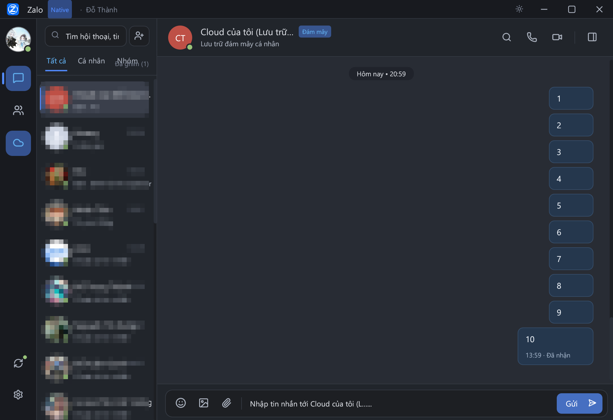
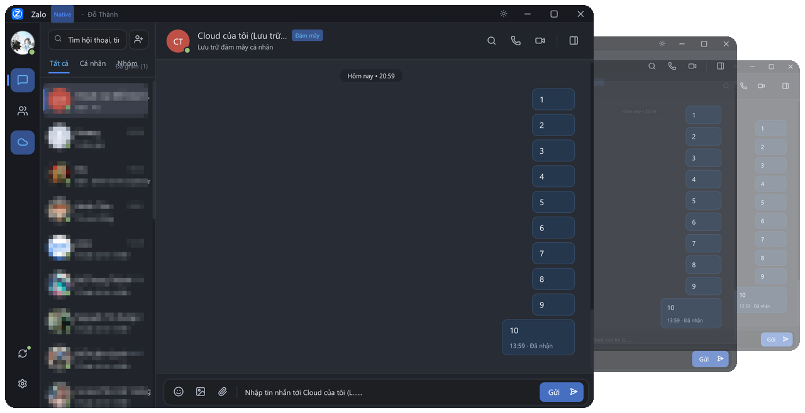

Zalo trên desktop.
Nhẹ hơn cho công việc.
ctdozlite là một Zalo desktop client viết bằng Rust, hướng đến hiệu năng gọn nhẹ, khả năng chạy nhiều tài khoản song song và lưu trữ dữ liệu cục bộ.

Ảnh chụp giao diện thật, thông tin cá nhân đã được làm mờ.
Ít bộ nhớ hơn. Nhiều không gian làm việc hơn.
Thiết kế theo hướng native với Rust, ctdozlite giảm đáng kể tài nguyên cần thiết cho một phiên Zalo desktop so với bản đóng gói bằng web runtime.
Cách đo
Đo ngày 31/10/2026| Chỉ số | Zalo PC 26.10.11 | ctdozlite |
|---|---|---|
| RAM khi chờ (Working Set) | 1.800 - 1.975 MB | 149,5 MB |
| Số tiến trình | 7 | 1 |
| Thời gian có cửa sổ | không đo | 0,18 - 0,19 giây |
| Kích thước tệp chạy | 136 MB | 17,2 MB |
Cách đo: Windows 11, PowerShell Get-Process đọc WorkingSet64, lấy giá trị trung vị sau 15 giây chạy ổn định. Zalo PC đo 4 lần trong 40 giây, ctdozlite đo 3 phiên riêng, mỗi phiên 10 mẫu cách nhau 1 giây.
Điều kiện: cả hai đều đã đăng nhập và để yên, cùng một tài khoản, không mở cuộc gọi. Máy chạy Windows 11, CPU Intel Core i7-12700H, 20 luồng.
Lưu ý: RAM phụ thuộc vào số hội thoại đã tải, số ảnh đã xem và theme. Con số trên là quan sát trên một máy, không phải cam kết cho mọi cấu hình.
Một desktop. Nhiều tài khoản.
Mỗi phiên làm việc có thư mục dữ liệu riêng, giúp bạn tách biệt tài khoản cá nhân, công việc và chăm sóc khách hàng mà không cần máy ảo.

Vượt ra ngoài cửa sổ desktop.
Chế độ giao diện dòng lệnh hiển thị mã QR ngay trên console. Phù hợp khi làm việc qua SSH hoặc triển khai trên máy chủ không có màn hình.
Dữ liệu của bạn. Quyền kiểm soát của bạn.
Lịch sử tin nhắn được lưu trong tệp SQLite trên máy. Bạn có thể sao lưu, truy vấn hoặc di chuyển dữ liệu bằng bất kỳ công cụ nào hỗ trợ định dạng này.
| msg_id | thread | noi_dung | ts |
|---|---|---|---|
| 4821 | nhom_ky_thuat | Bản build tối nay đã xong chưa? | 09:14 |
| 4822 | nhom_ky_thuat | Xong rồi, đang kiểm thử cuối. | 09:15 |
| 4823 | ban_hang | Đơn hàng đã được xác nhận. | 09:31 |
| 4824 | ca_nhan | Để mình xem lịch đã. | 10:02 |
Nhỏ gọn. Nhưng không thiếu.
Nhiều phiên. Một không gian.
Quản lý song song các tài khoản Zalo với thư mục dữ liệu riêng cho từng phiên.
Rust native
Kiến trúc native, hướng đến footprint thấp và khởi động nhanh.
SQLite cục bộ
Toàn bộ lịch sử trò chuyện nằm trong một tệp trên máy bạn.
Từ desktop đến terminal.
Hai giao diện cho hai cách làm việc: cửa sổ đồ họa khi ngồi trước máy, và dòng lệnh khi làm việc từ xa.
Xây dựng minh bạch.
ctdozlite được phát triển bằng Rust 2021 và công khai trên GitHub. Bạn có thể đọc toàn bộ phần xử lý giao thức, mã hóa và lưu trữ.
Sẵn sàng thử một cách nhẹ hơn?
Clone dự án, build bằng Cargo và đăng nhập bằng mã QR. Không cần cài thêm runtime nào khác.